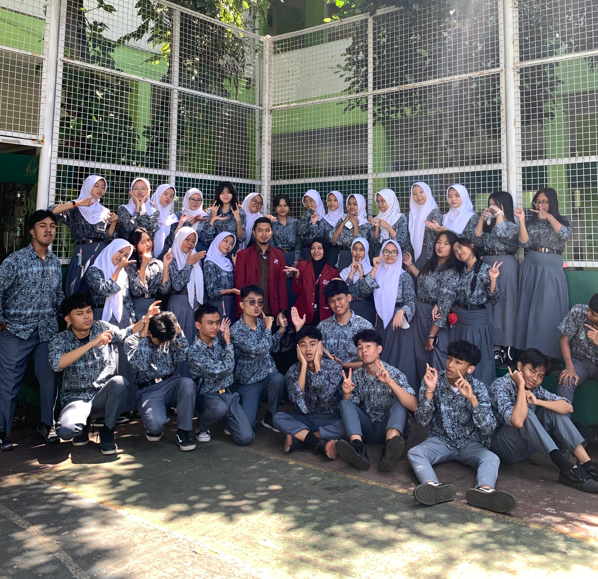

Calon pendidik profesional yang fokus pada inovasi pembelajaran Informatika melalui pendekatan berbasis masalah dan analitik data.

Akar Budaya dan Identitas:
Perkenalkan, nama saya Bintang Ramadhan. Saya menghabiskan masa kecil di Bandung, sebuah kota yang membentuk intuisi kreativitas saya. Namun, masa remaja saya hingga pendewasaan diri berlangsung di Pangalengan, sebuah wilayah yang bertransformasi dari kawasan agraris yang tenang menjadi destinasi pariwisata yang dinamis. Hidup di tengah perpaduan antara kearifan lokal masyarakat petani dan pesatnya arus pariwisata mengajarkan saya tentang pentingnya adaptabilitas. Nilai-nilai ini menjadi jangkar dalam cara saya memandang pendidikan: bahwa setiap perubahan lingkungan harus direspon dengan kesiapan diri yang tangguh dan karakter yang inklusif.
Latar Belakang:
Latar belakang pendidikan saya di bidang Informatika murni sebuah disiplin ilmu yang saya cintai. Sejak kuliah, fokus saya lebih banyak pada pengembangan perangkat lunak, sistem informasi, dan pemanfaatan teknologi untuk menyelesaikan berbagai permasalahan. Sejujurnya, profesi guru bukanlah cita-cita utama saya sejak awal. Saya lebih membayangkan diri berkarier sebagai pengembang sistem atau praktisi teknologi informasi. Namun, kegelisahan saya muncul saat melihat realitas di lapangan: salah satunya banyak remaja yang terjebak dalam arus negatif dunia digital, mulai dari penyalahgunaan data pribadi hingga konten sensitif yang berujung pada ancaman. Anak-anak kita mahir menggunakan teknologi, namun seringkali gagal memahami risiko di baliknya. Dari sinilah, hati saya tergerak untuk beralih menjadi pendidik. Saya memiliki misi besar: mengubah paradigma murid, dari sekadar 'pengguna pasif' teknologi menjadi 'pencipta' yang cerdas. Informatika bagi saya bukan sekadar barisan kode, melainkan medium untuk membangun pola pikir kritis dan kesadaran digital. Saya berkomitmen menjadi pendidik yang membimbing generasi penerus untuk menguasai teknologi, bukan "dikuasai" olehnya, guna masa depan yang lebih aman dan inovatif.
"Hayyatuna kulluha ibadah"
Misi saya adalah menjadi guru Informatika yang mampu membimbing peserta didik untuk belajar melalui pengalaman nyata, berpikir logis, serta menghasilkan karya yang bermanfaat bagi masyarakat. Saya ingin menjadi fasilitator pembelajaran yang mendorong siswa untuk berani mencoba, memecahkan masalah, berinovasi, dan memanfaatkan teknologi secara bijak dalam kehidupan sehari-hari. Melalui pendekatan pembelajaran berbasis proyek, saya berupaya menciptakan lingkungan belajar yang aktif, kreatif, dan relevan dengan perkembangan dunia digital.